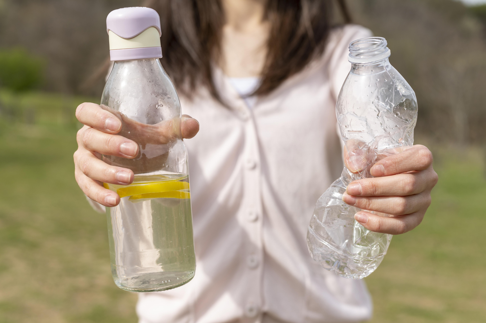

Sp has 4 green mark platinum building.
Green mark platinum mean it is a building that save at least 30% and
it is non-air conditioned building.

Singapore Polytechnic
These are the things that Singapore Polytechnic has done to improve Sustainability Matters


